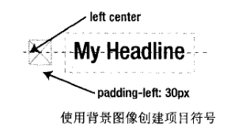
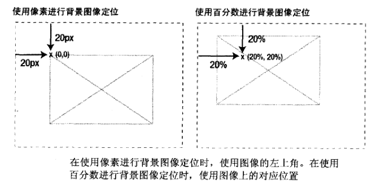

精通CSS笔记-背景图片
学习目标：
- 固定宽度和可变宽度的圆角框
- 滑动门技术
- 多个背景图片和border-radius属性
- CSS投影
- 不透明度和RGBa
- 让PNG适用与IE老版本
- 视差滚动
- 背景替换
CSS背景图片基础
可以利用背景图片将图片从HTML标签中分离出来，即在HTML为图像创建一个“钩子”，然后使用CSS设置图片为背景图片。
例如：在HTML中添加一个空的div并且设置ID为branding，然后将这个div的尺寸设置为与站点图像相同，设置不重复，作为背景应用到网页中。1
2
3
4
5
6#branding {
width: 700px;
height: 200px;
background-image: url(/img/branding.gif);
background-repeat: no-repeat;
}
固定高度渐变背景+背景色：
需要一个很高但很窄(1-2像素)的渐变图像，然后将这个图像用于与页面的主体并让其水平平铺，但由于高度固定，所以若页面内容长度超过图像高度，则渐变会突然中止。
此时可以添加一个背景色，背景图片总是在背景色上，当图片结束时，颜色就会显示出来了。若背景色和渐变结束的颜色相同，则图像和颜色转换就看不出来了。1
2
3
4
5body {
background-image: url(/img/gradient.gif);
background-repeat: repeat-x; /* 指定水平平铺 */
background-color: #ccc; /* 此颜色为gif的结束颜色 */
}
设置背景图片的位置，将背景图片当作标题/条目的图片符号：1
2
3
4
5
6h1 {
padding-left: 30px;
background-image: url(/img/bullet.gif);
background-repeat: no-repeat;
background-position: left center; /* 图片定位于元素左边并且垂直居中 */
}

background-position除了使用关键字,也可以使用像素或百分比作为单位，但两者有区别。
若使用像素设置背景位置，那么图片左上角到元素左上角的距离为指定的像素值。
若使用百分比，则使用图像的对应点与左上角进行定位。

注： 不要将像素或百分比等单位与关键字混合使用，现代浏览器会故意忽略这种写法，某些浏览器可能报错。
CSS background属性的简写版本,同时设置所有属性：background: #ccc url(/img/bullet.gif) no-repeat left center;
圆角框
注: 由于CSS3标准的实现，圆角框的实现已经很方便，除非是作为HACK兼容老版本的浏览器，否则大可不必如此麻烦。
固定宽度的圆角框：
需要两个图片，一个用于框顶，一个用于框底。1
2
3
4
5
6
7
8
9
10
11
12
13
14
15
16
17
18
19
20
21<style>
/* 将顶图用于标题，底图用于div框底部 */
/* 在div中添加内边距，隔离内容区域 */
.box {
width: 418px;
background: #ccc url(/img/bottom.gif) no-repeat left bottom;
padding-bottom: 1px;
}
.box h2 {
background: url(/img/top.gif) no-repeat left top;
margin-top: 0;
padding: 20px 20px 0 20px;
}
.box p {
padding: 0 20px;
}
</style>
<div class="box">
<h2>headline</h2>
<p>content</p>
</div>
灵活圆角框（滑动门技术）：
不用一个图像组成顶部或底部，而是用两个相互重叠的图像，随着框尺寸的增加，大图像由更多的部分显露出来，这样就实现了框扩展的效果。
因为一个图像在另一个图像上滑动，将一部分图像隐藏了起来，所以也称为滑动门技术(sliding doors technique)>
需要在标记中添加两个额外的无意义元素，需要四个图像，底部图像的高度必须与框的最大高度相同。1
2
3
4
5
6
7
8
9
10
11
12
13
14
15
16
17
18
19
20
21
22
23
24
25
26
27
28
29
30
31
32<div class="box">
<div class="box-outer">
<div class="box-inner">
<h2>headline</h2>
<p>content</p>
</div>
</div>
</div>
<style>
/* 弹性布局和流式布局的主要原则之一： */
/* 使用em为单位设置宽度，在浏览器中增加文本尺寸时框会扩展 */
/* 使用百分比设置宽度，可以使框根据浏览器窗口的尺寸适应 */
.box {
width: 20em;
background: #ccc url(/img/bottom-left.gif) no-repeat left bottom;
}
.box-outer {
background: #ccc url(/img/bottom-right.gif) no-repeat right bottom;
padding-bottom: 1em;
}
.box-inner {
background: url(/img/top-left.gif) no-repeat left top;
}
.box h2 {
background: url(/img/top-right.gif) no-repeat right top;
padding-top: 1em;
}
.box p {
padding-left: 1em;
padding-right: 1em;
}
</style>
多个背景图片
前面的圆角框例子可以使用CSS3的多背景图片方式实现。1
2
3
4
5
6
7
8
9
10
11
12
13
14
15
16
17
18
19
20<style>
.box {
background-image: url(/img/top-left.gif),
url(/img/top-rightt.gif),
url(/img/bottom-left.gif),
url(/img/bottom-right.gif);
background-repeat: no-repeat,
no-repeat,
no-repeat,
no-repeat;
background-position: top left,
top right,
bottom left,
bottom right;
}
</style>
<div class="box">
<h2>headline</h2>
<p>content</p>
</div>
border-radius & border-image
border-radius在书中没有特别给出什么tipsborder-image属性能给元素的边框添加背景图片。将图片划分为九宫格的方式，自适应的对应到边框上。
具体请看如下w3cschool的示例：
投影（阴影）
简单的CSS投影：
在div中显示的图片设置为背景图片，然后内套一个img将阴影图片使用负外边距偏移即可实现，或将阴影图片使用相对定位偏移图像。
CSS3支持的box-shadow属性能更加简单的设置阴影。box-shadow: 3px 3px 6px #666;分别表示垂直和水平的偏移，投影的宽度（模糊程度），颜色。
不透明度
CSS实现的opacity属性的问题是，除了对背景生效之外，对应用的元素的内容也会继承不透明度的属性值。
因此可以透过警告信息的文本看到页面上的文本，而且，若不透明度太低时，警告文本本身就看不清楚了。RGBa可以解决此问题，分别设置颜色的红蓝绿值（0-255）和不透明度（0-1）
视差滚动
调整浏览器窗口的大小时，背景图像会以不同的速度滚动，让人觉得这个页面由深度，这种现象叫视差滚动，许多老式计算机游戏使用此技术。
参考链接：视“差”滚动浅析- 前端技术- 腾讯ISUX
图像替换
为了展示某些浏览器没有的字体，使用css的方式，在文本之上使用图片替代，但是这种方式由缺陷，而且目前由于css字体的发展，目前此技术比较少见。